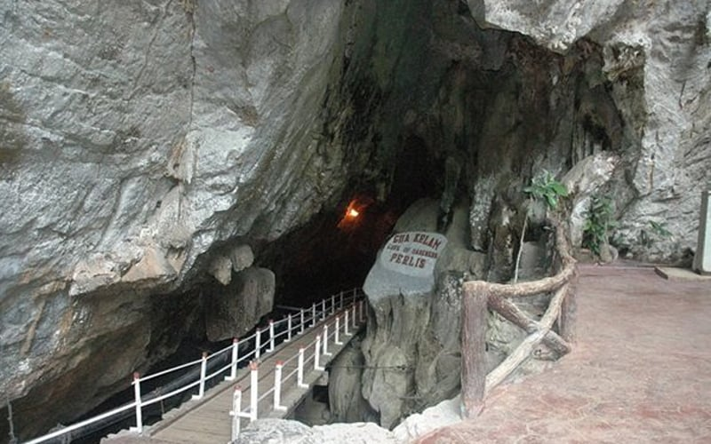
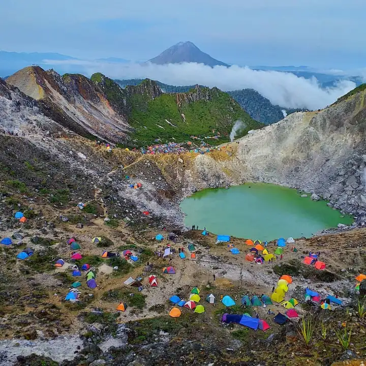
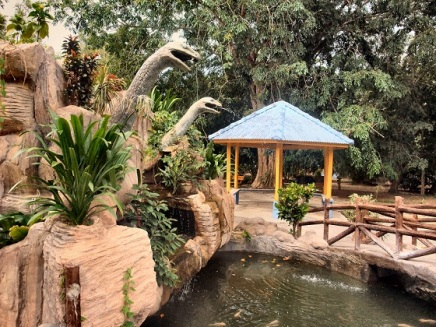

Perlis
Perlis, the smallest state in Malaysia, is nestled in the northern region of Peninsular Malaysia. Despite its size, Perlis holds its own charm with its tranquil rural landscapes, rustic villages, and laid-back atmosphere. Known for its agricultural heritage, particularly in rice cultivation, Perlis offers visitors a glimpse into traditional Malay life. While its attractions may be modest, Perlis invites travelers to slow down and appreciate the simplicity and serenity of rural Malaysia.
Attractions

Gua Kelam
The Bat Cave can be said to be one of the must-see attractions in Perlis. It is a limestone cave. The total length of the cave is 370 meters!
Kaki Bukit, 02200 Kaki Bukit, Perlis, Malaysia
08:00a.m-06:00p.m
Kaki Bukit, 02200 Kaki Bukit, Perlis, Malaysia
08:00a.m-06:00p.m

Gunung Medan
Gunung Medan attracts locals and tourists every day to go hiking and cycling. This mountain is open to tourists to climb. From the top of the mountain, you can see patches of green rice fields and countryside. The scenery is very charming.
Taman Gunung Medan, 01000 Kangar, Perlis, Malaysia
Open all day
Taman Gunung Medan, 01000 Kangar, Perlis, Malaysia
Open all day

Galeri Diraja Sultan Abdul Aziz
Snake & Reptile Farm, a variety of venomous and non-venomous snakes are raised in the park for medical laboratory experiments and medical use. Now it is also developed for general tourists to visit. There will also be tour guides here to help you learn how to identify snake types and what to do if bitten by a snake. The most special thing is that the snake garden is full of sunflowers!
Sungai Batu Pahat, Perlis, 01000, Kangar, Perlis, 01000, Malaysia
09:00a.m-05:00p.m
Sungai Batu Pahat, Perlis, 01000, Kangar, Perlis, 01000, Malaysia
09:00a.m-05:00p.m